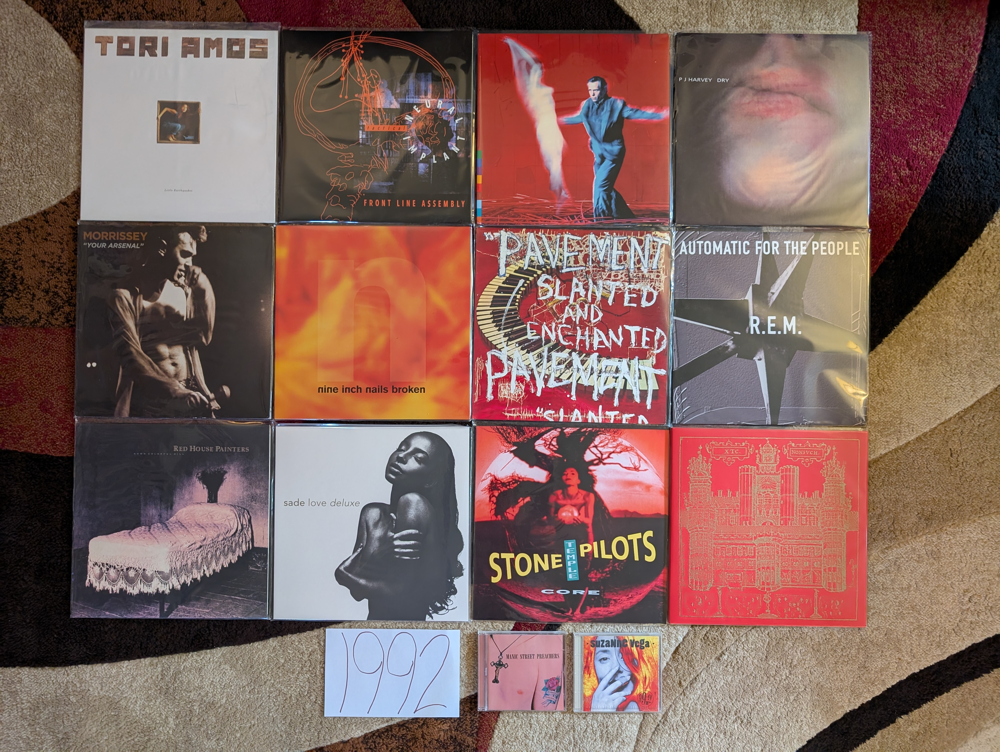

1992 Albums¶
As I have mentioned multiple times, this project was done working backward from the current day (in the 2020s) and I encounter major milestones in reverse. This is the point where things become almost exclusively a retrospective discovery process. Of the albums on my 1992 list, the only one I actually heard that year was the one from R.E.M. and at the time I didn’t like it nearly as much as their 1980s work that I was already a big fan of. As for the remainder, I heard the singles from the Peter Gabriel and Sade records but they made little impact on me at the time. This list would be assembled slowly over the last three plus decades.
This year was very much a part of the “80s hangover” when most of the popular music was being made by the dominant artists of the prior decade, but we are also seeing the first indications of what the 90s would be. It was becoming clear that more stripped back, acoustic sounds were going to dominate and that women would play a far larger role in rock music. Some of the albums on my list feel like a blueprint for how to make rock music in the 90s. I think it would have been an exciting time to be following the trends closely, but alas, I was just a kid.
{kind=link}
Little Earthquakes by Tori Amos - [1992 FAVORITE] - There is a lot of discussion and disagreement about the artistic value of the body of work by Myra Ellen [Tori] Amos, but few will try to say that this is anything less than one of the greatest debut records ever made. This is the kind of album that someone makes when they have been bursting with ideas since they were a child, but only had the opportunity to put them to record properly at the age of 28. Listening today, the most striking thing might be a kind of 70s/80s singer-songwriter vibe on tracks like “Leather”, “China” and especially “Tear in Your Hand” that we would never really hear from her again. Then there is the blueprint for the kind of brilliant chamber pop that she has continued to make on an off for decades since (“Crucify”, “Girl”, “Silent All These Years”, “Mother”). We also see the first indications of the aggressive art-rock of her mid-career in the outstanding “Precious Things”. Of course, there is also one of the greatest songs of all time in the timeless classic “Winter”. [Memory: It is impossible to pick just one memory to associate with this record, so I will try to keep it to a few short paragraphs. In 1993 I became a massive fan of the solo work of Paul McCartney. Around this time, I recorded a documentary about his career of of VH1. It was a BBC program with different timing from American cable TV, and they needed to show videos to fill out the last half hour slot. They played the video to “Silent All These Years”. I remember being confused and fascinated by the video with the red haired woman spinning in a box in the white room. I remember thinking it was the latest Cyndi Lauper song (LOL!). I filed away the name Tori Amos, but didn’t dig any further at the time. This would be the second of her records that I would pickup in the summer of 1998. It would nearly instantly become one of my all-time favorites. I remember trying to introduce my male friends to the record, who thought I was crazy to be so excited to what they could only see as “Lilith Fair Material”. I remember burning a CD of MP3 files that my brother borrowed and played in the machine shop at work. It was a bit embarrassing to have the song “Winter” associated with me in such a den of conventional masculinity. I don’t know if any record makes me think more strongly of my transition into young adulthood. These tracks remind me of my first taste of real independence and the newfound opportunity to establish my own personal identity. My relationship with the Tori Amos catalog has always felt highly coupled with my rejection of the traditional definition of masculinity.]
Tactical Neural Implant by Front Line Assembly - The only one of their early records that I really need at this point in my life. All the usual elements are here: danceable electro-industrial beats, half-growled vocals, and clips of classic science fiction films. For me, this is by far the most successful iteration of the formula, and it renders a half dozen other albums as redundant. [Memory: This reminds me of my first year living in State College, PA. I had a tiny little room in shared college housing with three other students who had transferred from the same Penn State satellite campus. I wasn’t happy, and this record often fit well with my state of mind at the time.]
Us by Peter Gabriel - The last of his “classic period” records feels like it gets stronger and stronger as the years pass. Closer to its release this felt a bit too much like So. Over time its themes of loss and change give this depth that wasn’t evident to me immediately. The best moments are the gentler songs like “Come Talk to Me”, “Blood of Eden”, and especially “Washing of the Water”. Yes the singles “Steam” and “Digging in the Dirt” are highly derivative of the hits from the preceding record, but in retrospect they provide some nice textural variation to a record that should be celebrated mostly for its quieter tracks. [Memory: The videos for the singles on this album used the same kinds of stop motion tricks as those from the album So. As a result of this apparent artistic stagnation, I didn’t give this album a proper listen until much later. I think a lot of people made this mistake at the time, and this never got its proper respect until the next century.]
Dry by PJ Harvey - No one has mixed punk with the blues quite like Polly Jean. “Oh My Lover” is one of the most striking career openers of all time. One of the greatest rock vocalists arrives in full force on tracks like “Dress”, “Sheela-Na-Gig”, and the closer “Water”. She would never make an album this straightforward again, and over a dozen records later it still feels absolutely essential. [Memory: It is interesting to realize that two of my favorite artists of all time released their debuts in the same year. It took me a while to make it to this record, as it was probably the very last one that I connected with. It would take over 20 years after release for me to really connect with the raw brilliance of this album.]
Generation Terrorists by Manic Street Preachers - It is fascinating in retrospect how much this sounds like the contemporary hair metal. I can’t see this as a work on the same level of what they would soon do, but heck if it isn’t a fun, glammy affair. We also get a peak at the more substantial work to come with the classic “Motorcycle Emptiness”. [Memory: perhaps the only reason I consider this a minor classic is the fact that “Motorcycle Emptiness” was one of the two songs (along with “A Design for Life”) that introduced me to these guys during a Glastonbury highlight film on HDNet. Also, I am a sucker for well done glam metal.]
Your Arsenal by Morrissey - The best work from his rockabilly era. The best tracks are the eccentric, highly stylized ones like: “Glamorous Glue”, “Certain People I Know”, and “I Know It’s Gonna Happen Someday”. The more straightforward rockers like “We Hate It When Our Friends Become Successful” and the closer “Tomorrow”have held up better than most of his work of this sort. Not among his very best records, but a very strong effort [Memory: I greatly regretted not buying this when the vinyl releases were made around 2014. Everytime the man opens his mouth, the chance of later reissue series decreases immensely. I tracked down a somewhat overpriced used copy on Discogs in 2023.]
Broken by Nine Inch Nails - The most angry record by one of the angriest artists ever. This kind of theatrics often sounds comical to me as a full grown adult, but as a young person this felt different. That said, it is still a fun listen, and an amazing production. Reznor has always been a master at mixing the aggressive industrial noise with quieter moments. He probably did that loud/quiet trick better here than on any other record. This is front loaded, but those first two tracks (“Wish”, “Last”) are glorious. [Memory: Throughout my adult life, sometimes even now when I am in a certain mood, there is nothing I want to do more than listen to this at high volume on headphones.]
Slanted and Enchanted by Pavement - I used to think that there music became more refined as the years went by, but I now realize that it was mostly a trick of production. On their first LP, the recording is compressed and crunchy, sounding very much the early 90s indie classic it is. From a songwriting and performance perspective they are already very much on top of there very specific sound. There will never be another Pavement, and I will never get tired of this album. [Memory: “Trigger Cut” has always been a favorite of mine, and I was really excited to hear them play it during their appearance at the 2010 Pitchfork Music Festival.]
Automatic for the People by R.E.M. - In the popular consciousness, this is their finest work. Filled with ballads and acoustic sounds, this is a far cry from their early punk influenced albums. The mellower tone does allow the songwriting to come to the forefront, and I think that is why the masses reacted to it so strongly. The best moments on this album are the quieter ones like “Nightswimming” and the massive hit “Everybody Hurts”. It would be so easy to write this off as a sellout record, and I’m glad that the world has collectively decided to properly honor this as a classic record. [Memory: I was already a huge fan of the band when this came out. My sister (and probably everyone’s sister) bought this back in the day, and listed to it repeatedly. I didn’t appreciate it at the time, and largely ignored it until I was in my early 20s. I now fully understand and appreciate how it fits in with the brilliant catalog of one of my favorite bands.]
Down Colorful Hill by Red House Painters - This is one of the most beautiful albums ever made. A lot is made out of the artist’s life, and the sadness of their situation when this was made. I prefer to think of it as the story of someone realizing that they need to change, and taking the first steps towards a better place. I don’t know that Mark Kozelek gets enough credit for these understated, folk rock epics like “Medicine Bottle” and “Down Colorful Hill”. It is a triumph of structure and composition that music of this genre can produce 9-10 minute songs this compelling. [Memory: I became really interested in the early work of this artist in the 2006-08 timeframe. This was a period of time when I was getting used to living on my own for the first time in my life. There was something in the sounds and words that really matched with how I felt in that point of my life. While I couldn’t relate to the specific experiences, there was a general mood of isolation that felt very familiar.]
Love Deluxe by Sade - The transition from 80s sophista-pop to 90s downtempo and trip-hop felt natural and highly effective. This album was a massive hit, where a group sensed the prevailing trends and capitalized on them to great effect. I still prefer the more varied textures of the first three records, but this is a very talented group of musicians taking their sound to a fruitful new place. [Memory: The cover of this album makes me think of Columbia House/BMG adds from the 90s. I feel like this was features as one of the 10 albums you could get for a penny for most of the decade.]
Core by Stone Temple Pilots - This was their most straightforward rock album, and perhaps the only time they were properly categorized as grunge. That said, there are also the first indications of those Beatlesesque melodies that would pop out more and more as the years went by. “Creep” and “Plush” were everywhere in the early 90s, and in retrospect, they are stunning examples of alt-rock tracks that were clearly aiming at the Billboard charts. I’m glad that revisionist history continues to raise the profile of this band that was underappreciated by critics in their time. [Memory: This reminds me of middle school. This was the official band of boys my age. While I wasn’t really allowed to listen to this kind of thing, I was kind of into them to.]
99.9 F Degrees by Suzanne Vega - One of the best records you were going to find in a used CD bin in the late 90s, this sold big, but was never really appreciated by most who gave it a listen. This is very different from the folk-pop she made in the previous decade, and added a lot of the sounds and color of the contemporary alternative rock scene. At times it almost makes me think of the twee (yet moody) alt-rock acts that would appear in the second half of the decade (e.g. The Cardigans). This has aged really well! [Memory: I remember a work colleague of mine who was also a big music person often brought in CDs to share. I think he brought this one from his wife’s collection due to my massive interest in the work of Tori Amos and Fiona Apple. There is perhaps a bit of Fiona here, but in general this is also brilliant work by a female artist, working in a fairly different territory than my other favorites of the time.]
Nonesuch by XTC - What a close to their original run! Their gradual progression from angular punks to highly refined art pop is one of the most compelling transformations in rock history. The songs here are absolutely masterful, especially the all time classics “Ballad of Peter Pumpkinhead” and “The Disappointed”. This would have been an amazing end to their story, but we would get two more brilliant albums at the turn of the millennium. [Memory: For years this was one of those grail records for me. I used to assume that I would never own this on vinyl, but a 2020 reissue would make my XTC collection complete.]